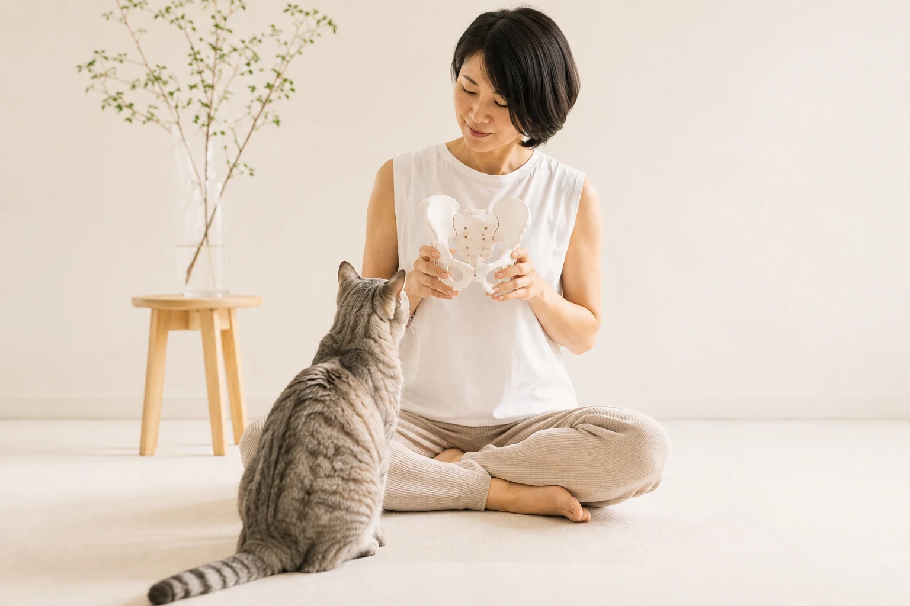

01 / BODY
整体・骨格調整で、
動きやすいからだへ。
姿勢、骨盤、肩こり、腰まわりの重さ。今の状態を丁寧に見ながら、呼吸や動きまでやさしく整えます。
からだのサポートを見るBody & Mind Care
整体とねこもち占いで、
あなたらしい“整い方”を見つける場所。
For your everyday
肩や腰が重い。
呼吸が浅い。
自分のことなのに、自分がよく分からない。
からだの違和感と、こころのモヤモヤは、
別々に見えて、そっとつながっています。
足りないのは、がんばりではありません。今の自分に合う整え方です。
Two approaches
姿勢、骨盤、肩こり、腰まわりの重さ。今の状態を丁寧に見ながら、呼吸や動きまでやさしく整えます。
からだのサポートを見る数秘術と12匹のねこから、本質・強み・本音を読み解きます。「私ってこうだったんだ」を見つける時間です。
ねこもち占いを見る
Our philosophy
今の自分を知ること。
無理をしていた場所に気づくこと。
自分に合う扱い方を、少しずつ覚えていくこと。
totonoサロンは、誰かの正解にあなたを合わせる場所ではなく、あなた自身の心地よさに戻る場所です。
Body care
その場だけ軽くするのではなく、姿勢・呼吸・動き方を見ながら、戻りにくいからだづくりを支えます。
肩こり、腰痛、姿勢の崩れなど、今の状態に合わせて無理なく整えます。
骨盤まわりの違和感、下半身の重さ、産後や年齢による変化に寄り添います。
整えたからだが日常でも保ちやすくなるよう、呼吸や体幹を意識した動きをお伝えします。
Nekomochi uranai
ねこもち占いは、数秘術をベースにした12匹のねこで、自分を知るオリジナル占いです。
本質・強み・使命・本音・人から見える印象。自分では気づきにくい個性を、親しみやすいねこの姿で読み解きます。
生年月日から、あなたの奥に住む「本質のねこ」を無料で診断できます。
本質・強み・使命・本音・見た目の印象を、PDF鑑定書でじっくり読み解きます。
夫婦、親子、職場など、関係性のすれ違いを“違い”として見つめ直します。
Voices
自分を知るきっかけになった、うれしいご感想をご紹介します。
今まで見てもらったことのある数秘では言われていなかった言葉が入っていて、なんかじーんときたよ〜。何回も読んで、自分をもっと理解したくなる内容でした。
Nekomochi voiceその通りで、びっくりしました。かわいい猫ちゃんたちに癒やされます。
Nekomochi voiceなるほど〜と思いながら読み入りました。子どもたち4人とも、それぞれの個性が光ってみえました。ぜひ参考にさせていただきますね。
Nekomochi voiceなんか数字すごい！って思うくらい、今の自分と一致です。会社では、まっすぐ猫さんの状態です。全部自分でやらない、線引きする。そしたら光の猫さんが助けてくれますよね。
Nekomochi voice自己犠牲、後回し。めっちゃ共感です。
Nekomochi voiceねこもち占い、何度も読み返しています。2匹のメインの猫ちゃんも、お相手のふしぎねこも可愛くて。たまたま、うちにもキジトラちゃんが1匹いるので嬉しかったです。ゆっくりできて、ペースの違う私たちなんですね。スピードが違うのは種類が違うから！共通する猫ちゃんたちもいてよかったです。私とお相手の猫が寄り添っているイラストも可愛かったです。
Nekomochi voiceかわいい猫ちゃんたちのイラストに癒やされながら、何度も読んでしまいました。周りのことを優先しちゃう行動や考えがこの通りだと気付かせてもらいました。「私らしさ」と言ってもらえて嬉しいです。私の行動パターンが書いてあり、その通り！と思いました。
Nekomochi voice「あなたなら大丈夫」。よく言われても意味が分からなかった言葉です。別のセッションでもこのことを取り上げてもらったことがありました。これが私なのね！と改めて思いました。全部当てはまる。なんにもしない日を作って、自然に溶け込みたいと思います。
Nekomochi voice※掲載にあたり、個人名を伏せ、読みやすいよう改行と句読点を整えています。
からだを知ることも、
こころを知ることも、
自分を大切にすること。
Profile
整体とトレーニングでからだを整えるサポートをしながら、数秘術をベースにした「ねこもち占い」を届けています。
からだの不調も、こころのモヤモヤも、無理にがんばるだけでは整わないことがあります。大切なのは、今の自分を知り、自分に合う方法を見つけること。
あなたが、少しラクに過ごせる毎日へ。一緒に整え方を見つけます。
Flow
からだのことは整体へ。自分や人間関係のことは、ねこもち占いへ。
まとまっていなくても大丈夫です。今気になっていることからお聞かせください。
あなたに合う整え方を、無理のない形で見つけていきます。
その日だけで終わらない、毎日を少しラクにするヒントをお渡しします。
Contact
整体のご予約・ご相談はLINEからどうぞ。
LINEで予約・相談する整体・トレーニングサポートは医療行為ではありません。強い痛みや症状がある場合は、医療機関への相談もご検討ください。